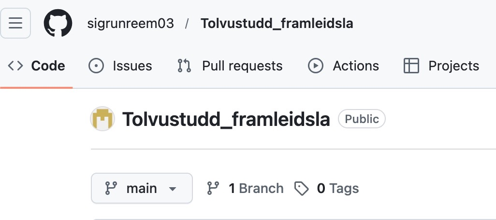
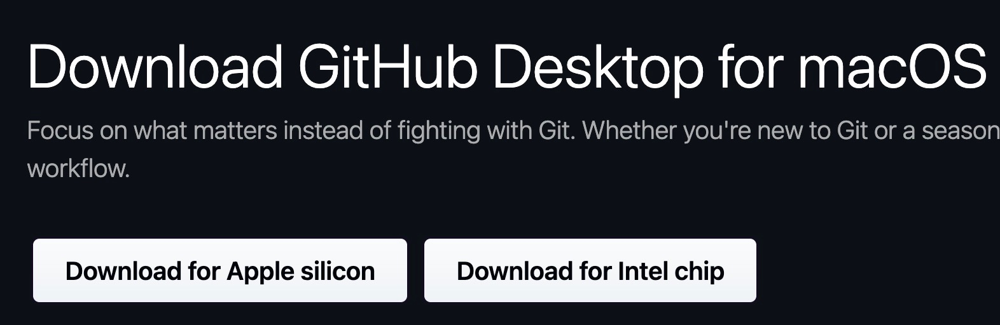
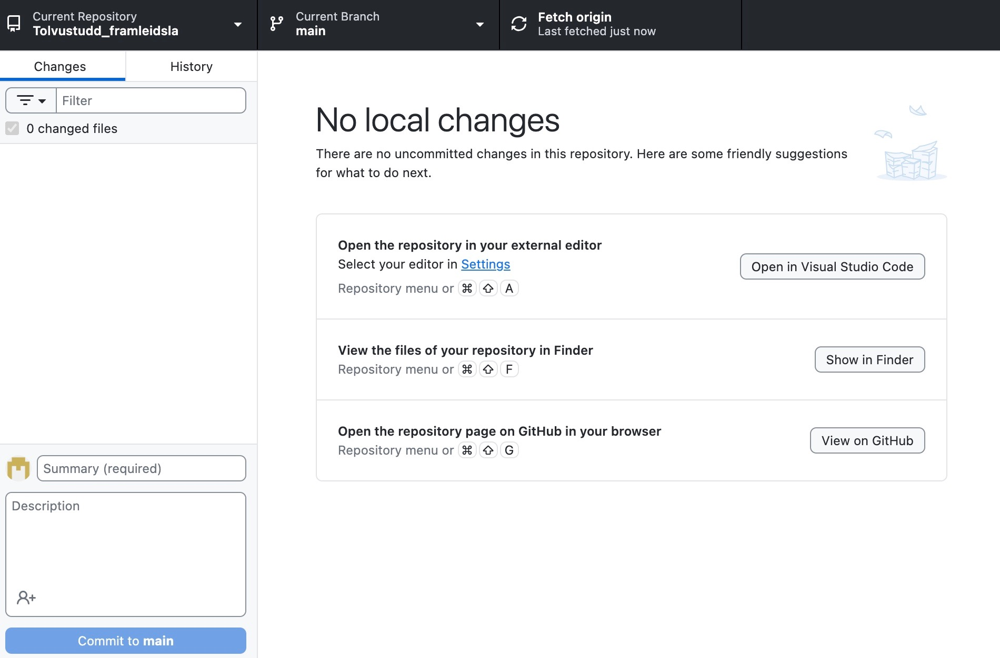
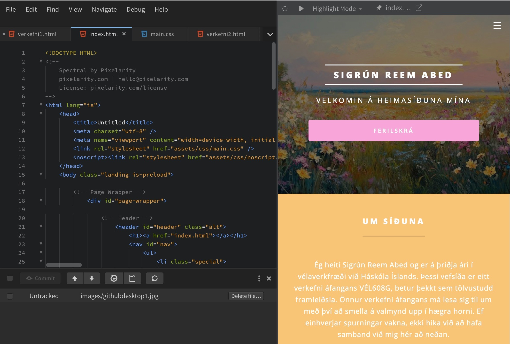
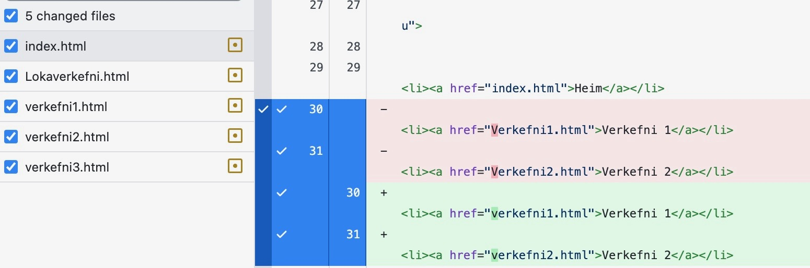
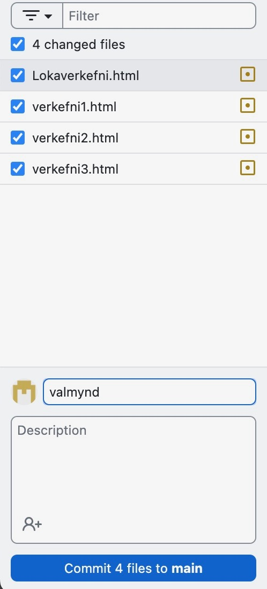
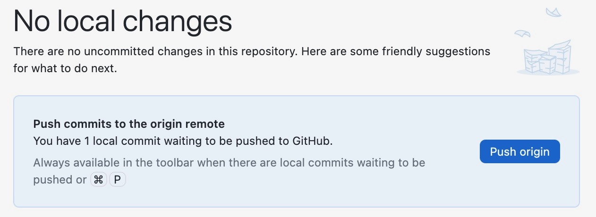
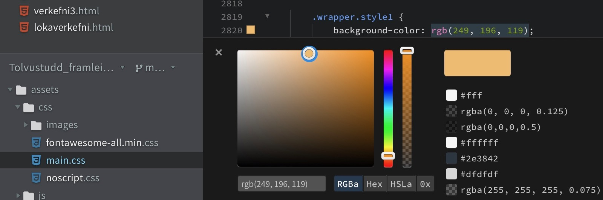

Fyrsta skref þessara verkefnis var að kynna sér hugbúnað, tæki og tól sem nýtast í vefsíðugerð. Ég byrjaði að horfa á myndband
kennarans, Hafliða Ásgerissonar, um Verkefni 1 sem finnst á Youtube.
Ég horfði einnig á önnur myndbönd til þess að kynna mér GitHub og Brackets.
Þar næst skoðaði ég heimasíður nemenda fyrri ára til þess að fá innblástur hvernig ég myndi vilja byggja upp mína eigin. Ég las einnig nokkrar
heimasíður til þess að koma í veg fyrir algeng mistök, en ég var ekki alveg svo heppin þar sem þetta ferli gekk ekki alveg svo smurt fyrir sig.
Ferlið
Ég byrjaði á því að stofna GitHub aðgang og búa til möppu (e. repository) með nafni áfangans.
Eftir það ákvað ég að hlaða niður GitHub Desktop og skráði mig þar inn með aðgangnum sem ég hafði stofnað á GitHub. Ég opnaði síðan möppuna sem ég bjó til og þaðan fór ég að vinna.
Hér fyrir neðan má sjá myndir af þessu ferli:

GitHub síðan mín

Hlaða niður GitHub Desktop

Viðmót Github Desktop
Eftir langa ákvörðunartöku á sniðmáti frá HTML5 UP ákvað ég að prófa mig áfram með Relativity. Ég hlóð niður
zip-skránni og færði hana í möppuna mína á GitHub. Þegar ég byrjaði að kóða í VS Code tók ég eftir því að það var ekki svo notendavænt. Þá tók ég ákvörðun um að skipta um sniðmát og skipta yfir í Spectral
ásamt því að kóða frekar í Phoenix Code (Brackets). Þar er hægt að sjá breytingar á vefsíðunni samstundis sem þykir mjög praktískt.
Mynd af því má sjá hér að neðan:

Phoenix Code; kóðun með heimasíðuna við hlið sér
Eftir að ég skipti yfir í Phoenix Code varð ferlið miklu auðveldara og ég gat byrjað að byggja upp mína eigin vefsíðu.
Ég tók óþarfa flipa út, breytti um liti og bjó til nýjar síður fyrir öll komandi verkefni áfangans. Ég gerði það með því að búa til nýtt file sem var með html-endingu. Það var mjög auðvelt að
sjá breytingar strax á vefsíðunni í gegnum GitHub í vafra. Ég notaði GitHub Desktop til þess að vista (e. commit)
allar breytingar, og þaðan sendi ég (e. push origin) þær á GitHub. Sjá myndir:

GitHub Desktop; hér sjást breytingar sem hafa verið gerðar

GitHub Desktop; Hér hakar maður við "commit to main"

GitHub Desktop; Að lokum hakar maður við "Push origin"
Eftir þessi skref var allt klappað og klárt og vefsíðan vistuð á GitHub.
Eftir það hélt ég áfram að vinna í kóðanum og vistaði breytingar jafnóðum.
Myndir voru auðveldar að setja inn. Ég vistaði myndirnar fyrst á GitHub repo-ið mitt, í möppuna images , vistaði síðan breytingarnar eins og
sýnt var að ofan til þess að þær birtust á netinu. Allt tengt útliti á síðunni mátti síðan finna í
assets/css/main.css kóðanum, þar sem ég prófaði mig áfram að breyta litum á alls kyns hlutum. ChatGPT hjálpaði síðan mikið við gerð kóðans og hvernig ég ætti að gera allskonar hluti tengda síðunni.

Phoenix Code; Breyting á lit í main.css
Væntingar til áfangans
Ég vil nýta áfangann til að bæta vinnulagið mitt í hönnun og framleiðslu og setja verkefnin
mín snyrtilega fram á þessari síðu. Mér finnst sérstaklega mikilvægt að læra að skipuleggja verkefni betur og fá meiri reynslu af 3D hönnun og 3D prentun.